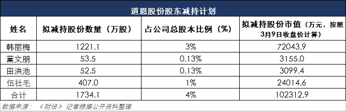

监控：口罩概念股搜于特十天八涨停，董事长亲属借机套现
原文链接 备份链接 搜于特现主营业务为品牌服饰运营和供应链管理。其近期股价上涨和公司公告拟投产生产口罩相关。然而公告发布近1个月后，公司相关产品仍未投产。同时，在公司股价上涨后，公司股东则开始减持 文 |《财经》记者 杨秀红 张建锋 编 …

作为A股涨幅最大的“口罩概念”第一股，道恩股份近期吸引各路游资聚集炒作，股东也趁股价在高位推出减持计划。这家公司的业绩成色究竟如何，引发市场关注争议
文 |《财经》记者 张建锋 杨秀红
编辑 | 陆玲
随着新冠病毒疫情蔓延，口罩成为中国乃至全球公众抢购的紧缺物资，相关产业的概念股一路飙升，成为近期A股市场的宠儿，其中表现最突出的就是道恩股份（002838.SZ）。
2020年2月3日至3月6日，道恩股份以368%的涨幅，遥遥领先紧随其后的泰达股份（000652.SZ）、搜于特（002503.SZ）148%、132%涨幅，成为A股市场所谓“口罩概念”第一股。但这家公司的真实业绩成色如何，日益引发争议。
“从资金进出情况来看，主力出逃、游资疯狂接盘，散户没有这么激进的风格和这么大的资金量。”一位在道恩股份此轮股价上涨中收益超50%的操盘手对《财经》记者表示，目前价格太高，不敢碰了，改看新基建相关公司。
龙虎榜交易数据显示，在近期买卖道恩股份前五名席位中，部分资金不断倒手，边买边卖，游资身影闪现其中。“公司股价是市场行为，对此不做评价。”道恩股份一位人士对《财经》记者表示。
股价暴涨之际，道恩股份迎来了股东减持计划。在1月份道恩股份股东伍社毛发布减持计划后，2月份公司董事长于晓宁之妻韩丽，及公司两名高管也加入拟减持行列。

《财经》记者统计显示，按照3月9日每股59元收盘价计算，上述股东、高管减持股份市值合计约10.23亿元，当天道恩股份整体市值240.1亿元。
上述道恩股份人士表示，股东减持是正常行为，数量并不大，目前只是有计划，什么时候减持还没确定。
相对于股价在一个多月里上涨3倍多的现状，道恩股份2019年营收同比增1倍、净利润同比增36.96%，并不让人太意外。
更重要的是，该公司与口罩相关的原材料–聚丙烯熔喷料，2018年收入占合并营业收入仅为13.41%。对此，道恩股份心知肚明，因此近期发公告提示：目前公司聚丙烯熔喷专用料订单增加，将对公司经营业绩产生一定的积极影响，但随着疫情得到有效控制，预计该产品未来订单会逐步减少。
《财经》记者注意到，与口罩核心层熔喷布缺口巨大形成鲜明对比的是，熔喷布原料高熔指纤维聚丙烯国内产能比较充裕。工信部表示，聚丙烯纤维中用于口罩生产的高熔指聚丙烯纤维料2019年国内产量约90万吨，一吨可生产一次性外科口罩90万-100万副。
而作为高熔指聚丙烯纤维料的原材料-聚丙烯目前供大于求，该产品期货价格虽止跌企稳有所回升，但聚丙烯主力连续合约在3月6日的收盘点数，相对于2月4日低点，涨幅仅为6.96%。
有机构预测，中长期来看，聚丙烯受新增产能压制未改。
游资轮番炒作，实控人拟高额套现
3月9日，在沪指收盘跌3.01%的情形下，道恩股份再度逆势涨停。
自2月3日春节开市以来，道恩股份股价已从节前的11.46元/股上涨至如今的59元/股，股价涨幅高达414.83%，成为口罩概念第一股。
“从盘面上看，主力资金每天在出货，但仍不影响他涨停，说明游资在疯狂的换手。”近日，股市操盘手张文（化名）对《财经》记者表示。
《财经》记者观察到，从资金角度看，近期道恩股份股价上涨主要源自于游资的炒作。自2月3日开始以来，该公司公布的龙虎榜交易数据显示，其买入前五名大多是游资。且在买卖前五名席位中，有一些资金正在不断倒手，边买边卖。
以3月5日为例，当日道恩股份涨停，其买入和卖出的前五大席位中均出现了西藏东方财富证券拉萨团结路、西藏东方财富证券拉萨东环路的身影。
而自2月3日以来，这两家营业部身影频繁出现在龙虎榜交易数据名单中，且边买边卖。
“我的师兄春节前就进来了，资金量不算多，他翻了一翻就离开了。”张文向《财经》记者介绍：“我是第二波进来的，20元左右买入，30多元出的，没吃饱就跑了。我选择买进是因为师兄持有这只股票，让我帮着看下，感觉还有一波，但他没拿住。”
随着疫情的全球蔓延，口罩的稀缺程度一直居高不下。口罩概念股则成为资本市场的热门股。
公开资料显示，道恩股份是国内较大的口罩布聚丙烯熔喷料生产商。聚丙烯熔喷料，是目前市场短缺熔喷布的关键原料。
自2017年上市以来，公司股价已经从此前的3.77元低点，一度攀升到目前的59元，随着近期不断涨停，其股价上市以来迭创新高。
然而，伴随股价飞涨，公司股东的套现计划也随之而来。
2月12日，道恩股份发布持股5%以上股东拟减持股票的公告。其中，董事长于晓宁之妻韩丽梅拟减持不超过1221万股，占公司总股本的3%。
公司高管蒿文朋拟减持不超过53.5万股，占总股本的0.13%，另一高管田洪池拟减持不超过52.5万股，占总股本的0.13%。
其中，韩丽梅为公司董事，与公司董事长于晓宁系夫妻关系，为一致行动人，是公司的共同实际控制人。
公告称，上述公司减持时间为：本公告披露之日起15个交易日后的6个月内，公司三名股东拟减持手中股份。这也意味着，上述股东在3月4日以后将开始减持。
此外，今年1月10日，公司另一股东伍社毛也发布了减持公告。其持有942.7万股（占公司总股本的2.32%），拟减持不超过407万股，占本公司总股本的1%。其减持目的均为“个人财务安排需要”。
从股票来源看，这些拟减持的股东，其现有持股均来自“公司首次公开发行股票上市前持有的股份”。
其中，公司董事长之妻、公司实际控制人韩丽梅拟减持数量最多，约1212万股，如果按照3月9日59元/股收盘价计算，其套现金额将高达7.2亿元。
按照当日股价计算，道恩股份市盈率（TTM）为143倍。“太高了，现在不敢碰了。”张文对《财经》记者称。
熔喷料收入占比不高，市场供应已逐渐充足
被资金爆炒的道恩股份，与口罩相关的产品是聚丙烯熔喷专用料，该产品占公司收入并不高。
据道恩股份公告，2018年度，公司聚丙烯熔喷料销售收入为1.83亿元，占母公司营业收入的18.83%，占公司合并营业收入的13.41%，占比不高。
“公司初二就已复工，通过转产、扩能，聚丙烯熔喷专用料年产量从2万吨增至4万吨，现在增到7万吨。”道恩股份是上述人士对《财经》记者表示，疫情前聚丙烯熔喷专用料属于小范围行业，处于供需平衡状态，疫情后，口罩缺口带动该产品需求增长，公司该产品目前产销两旺。
据悉，道恩股份上述产品，主要供应老客户使用，如欣龙控股、山东俊富等，央企、民企都在其中。
相对于资金对股价的痴狂，道恩股份2019年净利润虽有增长，但算不上惊艳。根据2019年度业绩快报，公司实现营业总收入27.33亿元，同比增长100.57%，但归属于上市公司股东的净利润为1.68亿元，同比增36.96%。
2018年11月完成重大资产重组，合并报表中包含了子公司海尔新材的经营业绩，是公司业绩增长的主要原因。
登陆资本前，道恩股份的主业收入来源于热塑性弹性体、改性塑料和色母粒。在2017年成为A股市场中一员后，公司业绩虽有增长，但并不惊艳。
登陆资本市场当年，公司营业收入、归属于上市公司股东的净利润分别为9.34亿元、9379.78万元，同比增幅分别为16.81%、18.25%。相对于2016年27.70%%、32.44%的增幅，增速稍有下滑。
业绩增速下滑背景下，道恩股份开启了重组序幕。
2018年10月，公司拟以2.58亿元现金方式，收购同行业公司海尔新材80%股权。海尔新材股权过户，于当年11月19日完成，并于11月1日纳入道恩股份的合并范围。上述收购，拉升了公司重组当年业绩增速。
2018年，道恩股份从海尔新材获得的投资盈利为1002.6万元，占当期公司净利润比例约8.2%。当期，道恩股份营业收入、净利润同比增幅分别为45.87%、30.52%。
由于口罩需求激增，部分券商看好公司2020年业绩。华西证券表示，由于疫情持续及复工需求，加上海外疫情扩散，预计短期内全球口罩需求将维持高位，口罩专用熔喷料也将随之上涨，看好道恩股份长期成长，首次覆盖给予“增持”评级。
2月28日，道恩股份与合作股东大韩油化，对子公司大韩道恩增资1200万美元，扩大经营规模。
上述道恩股份人士对《财经》记者表示，熔喷料目前主要为母公司生产，大韩道恩目前该产品日产能约30吨，产量不大，尚未纳入公司统计范围，拟扩产计划还未确定。
《财经》记者注意到，与口罩核心层熔喷布目前缺口巨大、价格暴涨不同的是，熔喷料市场供给较为充裕。口罩生产环节为：聚丙烯-高熔指纤维聚丙烯-熔喷布-口罩。
前瞻产业研究院数据显示，国内聚丙烯供应充足，年产量在2000万吨以上，预计2020年将有超过500吨有效产能释放，实际总供给量（含国内产量及进口量）或可达2700万吨。
在国内聚丙烯供应相对充足的情况下，国内一年可生产聚丙烯纤维约170万吨。根据工信部发布数据，聚丙烯纤维中用于口罩生产的高熔指聚丙烯纤维料2019年国内产量约90万吨，一吨可生产一次性外科口罩90万-100万副，生产N95医用防护口罩20万-25万副。
工信部亦表示，口罩生产原料–高熔指纤维聚丙烯，国内产能比较充足。
一位生产熔喷布上市公司人士对《财经》记者表示，熔喷料价格涨幅不大，供应充足。资料显示，目前国内生产高熔指聚丙烯纤维的企业主要有东华能源、镇海炼化、广州石化等30余家企业。随着宝丰能源等企业加入，该产品供应将会进一步增加。
供给充分的情况下，近期聚丙烯期货价格虽止跌企稳，并有所上涨，但涨幅较小。Wind数据显示，作为聚丙烯期货价格走势重要指标，聚丙烯主力连续合约，即DCE聚丙烯，2月4日低点为6680点，3月6日收盘于7145点，涨幅仅为6.96%。3月9日，受国际原油期货价格暴跌影响，DCE聚丙烯跌4%至6841点。
福能期货表示，需求增加支撑聚丙烯短期反弹，但受此前库存积压，及新增产能延续释放影响，中长期来看，聚丙烯受新增产能压制未改。


▲点击图片查看更多疫情报道
责编 | 蒋丽 lijiang@caijing.com.cn
本文为《财经》杂志原创文章，未经授权不得转载或建立镜像。如需转载，请在文末留言申请并获取授权。
原文链接 备份链接 搜于特现主营业务为品牌服饰运营和供应链管理。其近期股价上涨和公司公告拟投产生产口罩相关。然而公告发布近1个月后，公司相关产品仍未投产。同时，在公司股价上涨后，公司股东则开始减持 文 |《财经》记者 杨秀红 张建锋 编 …
原文链接 备份链接 他们都发现，已经很久没有和同事们一起点奶茶了。陈江和同组的伙伴们在复工后拼过一次，去园区门口拿回外卖后，还要再经历一次测温、登记、消毒、洗手，后来，他们没有再点了。 文 | 史千蕙 编辑 | 楚明 运营 | 山山 位于 …
原文链接 备份链接 摘要：疫情以来，企业复工日期一再调整，何时能回到办公室成为人们最关心的事情之一。2月10日以来，人们陆续回到岗位，有的经历旅途波折，有人面临待业裁员。经过这个漫长的假期，人们有种恍若隔世的感觉。不管怎样，返岗上班或许是 …
原文链接 备份链接 不上班就得吃老本，我们没钱吃啥老本 口述者：刘兴（化名） 打工所在地：北京 编者注：刘兴，51岁，1988年从内蒙农村来京打工，右眼失明，左眼白内障，因手术风险较大无法做手术。现在做车管员工作。妻子36岁，智力二级残 …
原文链接 备份链接 据最新数据，意大利确诊新冠病例数已超过7000，累计死亡366例，是除中国之外，全球疫情最严重的国家。 在意大利的华侨人数众多。武汉疫情起来时，他们积极捐款捐物，把当地能买到的口罩一扫而空。 意大利医疗系统对新冠 …